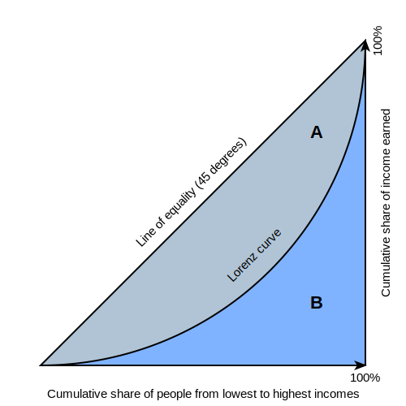

GDP and Wealth Inequality Investigations
Introduction
1.0
Throughout history, humanity has embarked on a profound journey to understand and address the unequal distribution of wealth, and its intricate connection to our economy. It is not implausible to imagine policymakers deliberating on measures that intentionally widen the gap between the rich and the poor, while simultaneously slowing down the rate of economic growth. Thus, the purpose of this essay is to explore the impact of the GINI index, a widely used measure of wealth inequality, on the per capita GDP growth of three prominent nations: the United States, Germany, and Japan.
Using data sourced from the reputable World Bank, it becomes apparent that the GDP per capita of the United States, Germany, and Japan exceeds the threshold for upper-income countries (defined as $13,589). The choice of upper-income countries as the focal point of this study is justified by several factors. Firstly, upper-income countries typically possess more comprehensive and reliable data on both GDP and wealth inequality, enabling rigorous empirical analyses and meaningful conclusions. Additionally, insights gained from studying the relationship between GDP and wealth inequality in upper-income countries can have significant policy implications for other nations. These countries often serve as models for economic development, with their policies serving as potential benchmarks for emulation by aspiring nations.
The relationship between wealth inequality and GDP
2.1
To investigate the relationship between wealth inequality and GDP, understanding the definition of GDP and GINI index is important. The GINI Index is a scale from 0-100, it is based on the lorenz curve which represents the share of income to each household in a country. The following graph is a template of the Lorenz curve:
Figure I
As shown in the graph, the X-axis represents the ranking of people or households from poorest to richest whereas the Y- axis represents the percentage of total income that each household shares. Area A is the area between the Lorenz curve and the line of perfect equality (where each person has an equal share of income or wealth), it represents the degree of income or wealth inequality in society. The larger the area A, the greater the degree of income or wealth inequality. Conversely, the smaller the area A, the more equal the distribution of income or wealth in society.
2.1
"GDP", stands for Gross Domestic Product, which is the total production of every household, which is the most essential economical measurement of a country. The GDP will always be present in different forms, Nominal GDP, Real GDP, Potential GDP, GDP per capita, GDP growth rate and GDP PPP(purchasing power parity). This investigation will mainly focus to what extent does wealth inequality impact the Real GDP and GDP growth rate of per capita.
Real GDP is a measure of a country's economic output adjusted for inflation, which allows us to compare economic output across different time periods. GDP per capita is calculated by dividing the total GDP by the population, which provides insight into the average income and standard of living of individuals in a country. GDP growth rate indicates the rate at which a country's economy is expanding or contracting over a specific period, which can provide insight into the effectiveness of economic policies and overall economic performance.
By focusing on these indicators, we can better understand how wealth is distributed and how economic growth is affecting different segments of the population. This information can be used to inform policy decisions and address issues related to income inequality and poverty.
As mentioned above, the aim of this investigation is to explore how the magnitude of the GINI index affects the GDP growth of upper income countries. Simons Kuznets created the formula of GDP. Which is the following equation:
GDP = private consumption + gross private investment + government investment
+ government spending + (exports - imports).
Or
GDP = C + I + G + (X - M)
The focus of this investigation is to examine the relationship between wealth inequality and GDP per capita in the countries of the United States, Germany, and Japan. The Lorenz curve, which is based on individual households, suggests that wealth inequality primarily impacts private consumption and gross private investment. According to data from the World Bank, private consumption and gross private investment (C+I) account for 87.8% of GDP. This indicates that to understand the relationship between GDP and wealth inequality, it is essential to explore the impact of wealth inequality on GDP per capita in the specific context of these three countries.
USA
Wealth inequality in the USA has been a growing concern in recent years, with the top 1% of households holding a disproportionate amount of the country's wealth. According to a 2021 study by the Federal Reserve, the top 1% owned 15 times more wealth than the bottom 50% of households. Meanwhile the GDP per capita continuously grows in an approximately linear shape, with the outlier in 2020 with the pandemic keeping the GDP per capita down.

Figure 2(Using Google sheet)
| Year | GINI Index |
|---|---|
| 2015 | 48.0 |
| 2016 | 48.1 |
| 2017 | 48.3 |
| 2018 | 48.5 |
| 2019 | 48.6 |
Table 1
FIG 2 and Table 1 shows the growth rate and GDP per capita in the year 2015-2019 and table 1 shows the Gini index of the USA. According to the graph, the Gini index of the USA slightly affects the GDP growth. The GDP per capita will grow with the increase of the Gini index. Suggesting the relationship between Gini index is proportional to GDP per capita in the USA
Germany
Wealth inequality in Germany has been a significant concern in recent years. While Germany is known for its strong social welfare system and relatively low poverty rates compared to some other countries, wealth disparities persist. The Gini index, a commonly used measure of income inequality, has remained relatively stable in Germany, ranging from approximately 31.6 to 31.9 between 2015 and 2019.

Figure 3
| Year | GINI Index |
|---|---|
| 2015 | 31.6 |
| 2016 | 31.7 |
| 2017 | 31.7 |
| 2018 | 31.9 |
| 2019 | 31.9 |
Table 2
In 2019, Germany experienced a negative growth rate of -4.9% in its GDP per capita, with the value amounting to $47,545. Simultaneously, the Gini index in Germany remained stable. This observation suggests that there is no significant relationship between the Gini index and GDP per capita in Germany. Consequently, the relationship observed in the United States does not seem to be applicable in the context of Germany.
Japan
Wealth inequality in Japan has also been a significant concern in recent years. Despite Japan's reputation for economic stability and social equity, wealth disparities persist within the country. The Gini index, which serves as a widely used measure of income inequality, has shown relatively stable values in Japan, ranging from approximately 31.6 to 31.9 between 2015 and 2019. These figures suggest that wealth inequality remains a persistent issue in Japan, warranting further investigation into its impact on the country's socio-economic landscape.

Figure 4
| Year | Gini Index |
|---|---|
| 2015 | 31.6 |
| 2016 | 31.7 |
| 2017 | 31.7 |
| 2018 | 31.9 |
| 2019 | 31.9 |
Table 3
According to the graph, the Gini index of Japan is largely stable, while the GDP per capita from 2015-2019 is in a stable shape either, suggesting that the GDP in Japan is proportional to the Gini index.
Comparison between three countries
The GINI coefficient of the United States is 0.486, indicating a relatively high level of wealth inequality. Japan's GINI coefficient, on the other hand, is 0.358, suggesting a lower level of wealth inequality compared to the United States. Germany's GINI coefficient is 0.301, which is the lowest among the three countries. When looking at GDP growth per capita, the United States had an average growth rate of 1.5% between 2010 and 2019, Japan had an average growth rate of 0.6%, and Germany had an average growth rate of 1.2% within the same time period. It is interesting to note that Germany had the lowest GINI coefficient and a relatively low GDP growth rate compared to the United States, which had the highest GINI coefficient and a higher GDP growth rate. These findings suggest that there may not be a strong correlation between wealth inequality and GDP growth, and that other factors may also contribute to economic growth.
In terms of private consumption as a percentage of GDP, Japan leads the group at 55%, followed closely by the USA at 54% and Germany at 52%. However, when it comes to gross private investment as a percentage of GDP, the USA is in the lead at 18%, followed by Japan at 17% and Germany at 15%. Looking at the GINI coefficients, the USA has the highest level of wealth inequality at 0.39, followed by Germany at 0.31 and Japan at 0.558. It's worth noting that while Japan has a higher GINI coefficient than Germany, its private consumption as a percentage of GDP is higher than Germany's. Overall, it appears that there is no clear relationship between private consumption or gross private investment and wealth inequality across these three countries.
Furthermore, given the concerns regarding the limited sample size, it would be advantageous to include a broader range of countries in the table in order to provide a more comprehensive overview of Gini index values.

Based on the available data, a clear relationship between the Gini index and GDP per capita is evident. Countries with a Gini index exceeding 40 exhibit comparatively lower GDP per capita than countries with lower Gini values.
Conclusion
To summarize the relationship between Gini index and GDP per capita does not appear to be on the three countries, the USA, Germany and Japan, it is observed that the United States has the highest level of wealth inequality and relatively higher GDP growth, Japan has a lower level of wealth inequality and lower GDP growth, while Germany exhibits the lowest wealth inequality and moderate GDP growth, suggesting a complex relationship between wealth inequality and economic performance.Using only three countries, the relationship is not quite clear, therefore I made the scatter plot graph to show the relationship, and found that the countries with 40+ Gini have a relatively low GDP per capita than the countries with lower Gini. This finding suggests a proportional relationship between Gini coefficient and GDP per capita, indicating that higher levels of wealth inequality, as measured by the Gini coefficient, are associated with lower levels of GDP per capita.
Work citing
1,"GDP - Gross Domestic Product." Worldometer, www.worldometers.info/gdp/what-is-gdp/#:~:text=GDP%20%3D%20private%20consumption%20%2B%20gross%20private,%2B%20(exports%20%E2%80%93%20imports)
2,"United States Private Consumption as a Percentage of Nominal GDP." CEIC Data, www.ceicdata.com/en/indicator/united-states/private-consumption--of-nominal-gdp#:~:text=United%20States%20Private%20Consumption%20accounted,an%20average%20shape%20of%2063.3%25.
3,"World Bank." World Bank, www.worldbank.org/.
4,"Japan's Gini Coefficient Index." World Economics, www.worldeconomics.com/Inequality/Gini-Coefficient/Japan.aspx#:~:text=Japan's%20Gini%20Coefficient%20Index%20is,D.C.%20United%20Nations%20University%2C%20Helsinki.
5,"Gini index score of Germany." Statista, www.statista.com/statistics/872522/gini-index-score-of-germany/.
6,"Gini coefficient for U.S. individuals, families, and households." Statista, www.statista.com/statistics/219643/gini-coefficient-for-us-individuals-families-and-households/#:~:text=In%202021%2C%20according%20to%20the,What%20is%20the%20Gini%20coefficient%3F.
7,"Clearly Explained: Gini Coefficient and Lorenz Curve." Towards Data Science, 17 July 2020, towardsdatascience.com/clearly-explained-gini-coefficient-and-lorenz-curve-fe6f5dcdc07.
8,"World Bank Data." World Bank, data.worldbank.org/.
9,"GINI index (World Bank estimate)." World Bank Data, data.worldbank.org/indicator/SI.POV.GINI.
10,"GDP (current US$)." World Bank Data, data.worldbank.org/indicator/NY.GDP.MKTP.CD.
11,"GDP per capita (current US$)." World Bank Data, data.worldbank.org/indicator/NY.GDP.PCAP.CD.